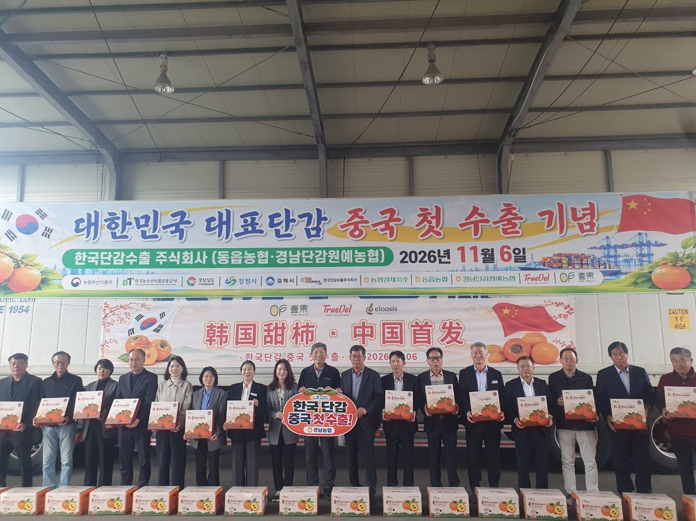
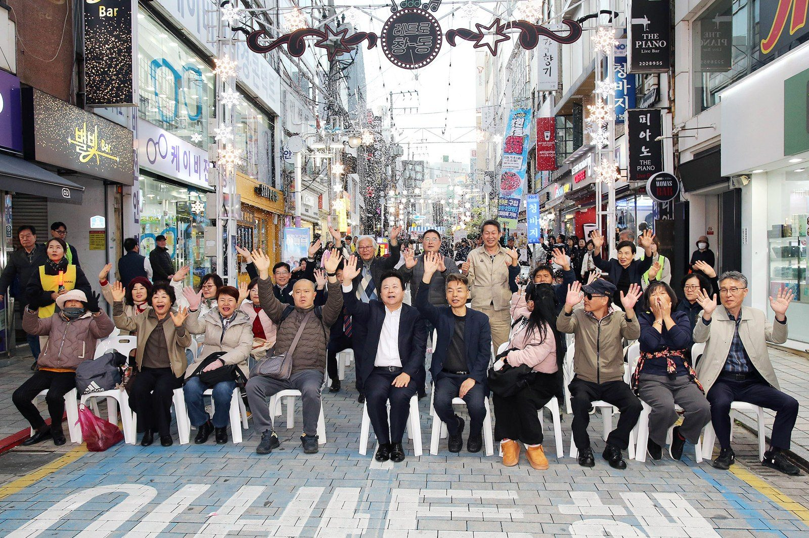

오늘 맑고 낮 12도…8일은 흐려도 경남 비 예보는 없어
기상청 7일 오전 11시 단기예보에 따르면 7일은 전국이 대체로 맑고, 당분간 기온이 낮아 춥겠다. 창원은 오후까지 맑고 낮 최고기온은 12도, 강수확률은 0%다. 이날 전국 아침 최저기온은 영하 5.3도에서 영상 6도 사이였다.

창원·김해산 단감 19.6톤이 6일 선적식을 마치고 중국 첫 수출길에 나섰다. 2008년 시작된 한중 검역협상의 첫 결과물이다. 10일 상하이에 도착할 예정이며, 경남도와 창원시는 12월 상하이·난징에서 판촉 행사를 연다.
머리기사 읽기 →국내: 11월 6일 정규장 / 환율: 6일 서울 외환시장 오후 3시 30분 기준 / 미국 주식·브렌트유: 현지 6일 마감. 필라델피아 반도체지수는 등락률만 확인했고 종가는 확인하지 못했다(한 매체는 3.54%로 표기). 수치는 이투데이·국제뉴스·파이낸셜뉴스·뉴시스 보도 기준.
기상청 7일 오전 11시 단기예보에 따르면 7일은 전국이 대체로 맑고, 당분간 기온이 낮아 춥겠다. 창원은 오후까지 맑고 낮 최고기온은 12도, 강수확률은 0%다. 이날 전국 아침 최저기온은 영하 5.3도에서 영상 6도 사이였다.

행사 · 마산 / 7~8일제2회 창동 라면축제가 6일 마산합포구 창동 일원에서 개막해 8일까지 이어진다. 창원시에 따르면 창동통합상가상인회와 경남신문이 함께 주최하고 시가 후원한다. 축제장에는 여…
창원시가 6일부터 '1인 견적 수의계약 체결 제한 제도'를 시행한다. 행정안전부가 개정한 「지방자치단체 입찰 및 계약 집행 기준」이 같은 날 시행된 데 따른 것이다. 같은…
6일(현지시간) 뉴욕증시는 혼조로 마감했다. 나스닥지수는 264.43포인트(1.09%) 오른 24,579.42, S&P500지수는 23.13포인트(0.31%) 오른 7,376.86으로 거래를 마쳤다. 다우지수는 237.33포인트(0.46%) 내린 51,285.73이었다…
6일(현지시간) 런던 ICE선물거래소에서 브렌트유 1월물은 전날보다 0.03달러 오른 배럴당 98.32달러에 마감했다. 뉴욕상업거래소의 서부텍사스산원유(WTI) 12월물은…
경남투자경제진흥원 부설 경남투자청은 6일 우주항공산업 잠재 투자기업인 30명을 대상으로 경남우주항공국가산업단지 진주·사천지구 현장 투어를 했다고 밝혔다. '동남권지역혁신클…
경남도가 6일 충북 청주 문화제조창에서 열린 제56회 대한민국 공예품대전 시상식에서 4년 연속 단체 최우수상(국가유산청장상)을 받았다. 본선 465점 가운데 경남 출품작 42점 중 28점이 입상했다. 김해의 박용수 경남도 명장이 도자 작품 '허황후의 하루'로 국가유산청장상을 받았다. 수상작은 8일까지 청주 문화제조창에서 전시된다. 경남도 보도자료 · 11.6
한국부울경중화총상회가 주관하고 주부산중국총영사관이 후원한 '2026 경남 한중우호의 밤'이 6일 저녁 창원 그랜드머큐어 앰배서더 호텔에서 열렸다. 창원시에 따르면 100여 명이 참석했고 중국인 유학생 5명에게 장학금을 전달했다. 강기윤 창원시장은 축사에서 기업 간 교류와 투자 협력 확대를 강조했다. 창원시 보도자료 · 11.6
국회 예산결산특별위원회가 2027년도 예산안 종합정책질의를 마치고 9~10일 경제부처, 11~12일 비경제부처 심사를 이어간다. 증·감액을 다루는 예산안조정소위는 16일부터 열린다. 법정 처리시한은 12월 2일이다. 경남 국비 사업의 증액 여부는 조정소위 단계에서 결정된다. 로이슈 · 11.5
창원시가 6일부터 같은 업체와의 1인 견적 수의계약을 연 5회, 총 2억원으로 제한했다. 행정안전부가 지방자치단체 계약 기준을 바꾼 데 따른 조치다. 특정 업체에 계약이 쏠리는 관행을 막겠다는 방향은 옳다. 수의계약은 절차가 간편한 대신 발주 담당자의 재량이 크다. 그 재량이 일부 업체에 대한 반복 발주로 이어진다는 비판은 오래전부터 있었다.
다만 제도의 성패는 한도를 정한 데서 끝나지 않는다. 이번 기준은 계약 횟수와 금액을 본청, 직속기관, 사업소, 구청, 읍·면·동별로 따로 센다. 한 업체가 여러 기관과 각각 다섯 번씩 계약해도 규정 위반이 아니다. 기관별 장부만 보면 한도를 지킨 것처럼 보여도 시 전체로는 쏠림이 그대로일 수 있다.
사설 전문 읽기 →수의계약은 경쟁입찰을 거치지 않고 발주기관이 상대 업체를 골라 맺는 계약이다. 그중 1인 견적 수의계약은 한 업체의 견적서만 받아 계약하는 방식으로, 지방자치단체 기준상 일반 기업은 추정가격 2,000만원 이하, 청년창업·여성·장애인 기업 등은 5,000만원 이하 계약에 쓸 수 있다. 절차가 빠른 대신 발주기관의 재량이 커서, 행정안전부는 11월 6일부터 같은 업체와의 계약을 기초자치단체 연 5회·2억원, 광역자치단체 연 7회·3억원으로 제한했다. 두 곳 이상에서 견적을 받는 2인 이상 견적 수의계약과는 구분된다.
중국 상하이에 도착한 첫 단감의 판매가격과 재주문 여부는 어떻게 되는가. 수출단지 5곳 가운데 창원 소재 단지는 몇 곳이고 참여 농가는 몇 호인가. 창원시의 지난해 1인 견적 수의계약 가운데 같은 업체와 5회 넘게 계약한 사례는 얼마나 되는가. 국화축제 9일간 방문객 수와 안전 조치의 결과는 언제 공개되는가. 우주항공 현장 투어 참가 기업 가운데 후속 상담으로 이어진 곳이 있는가. 이 질문들은 취재 제안이며, 확정된 취재 일정은 아니다.
이 호의 기사는 출처를 요약해 새로 작성했고, 해설과 사설은 편집 의견이다. 시황은 정보 제공용이며 투자 권유가 아니다. 날씨와 축제·행사 일정은 바뀔 수 있으므로 기상청과 주최 측 안내를 확인하시기 바란다. 오류는 확인 즉시 정정한다.
발행인 cygang · 편집장 cygang · AI 기자 강가온(ChatGPT) · AI 기자 강윤슬(Claude)